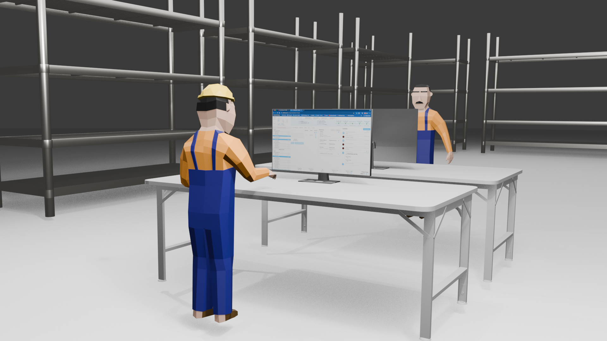
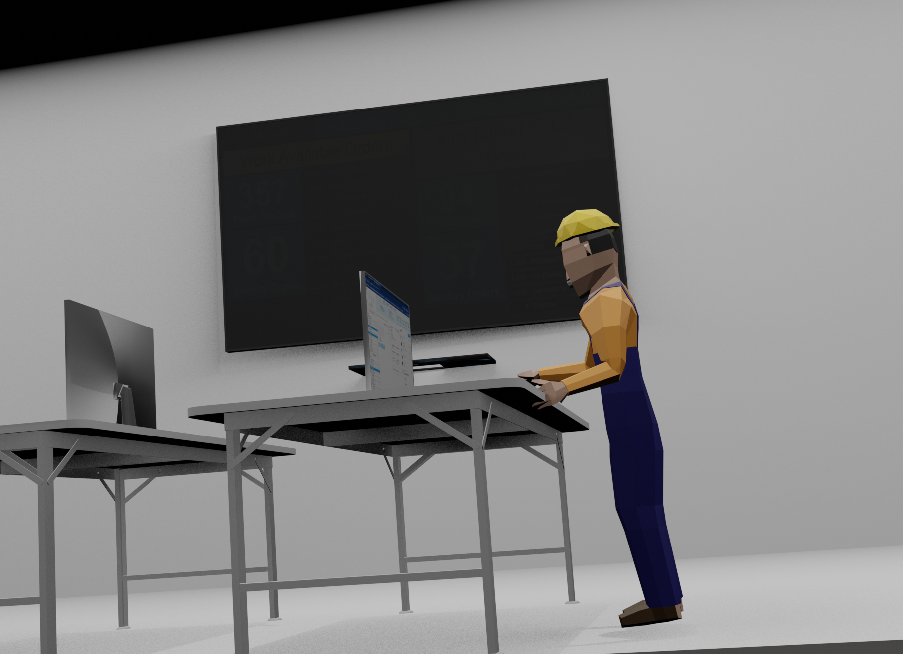
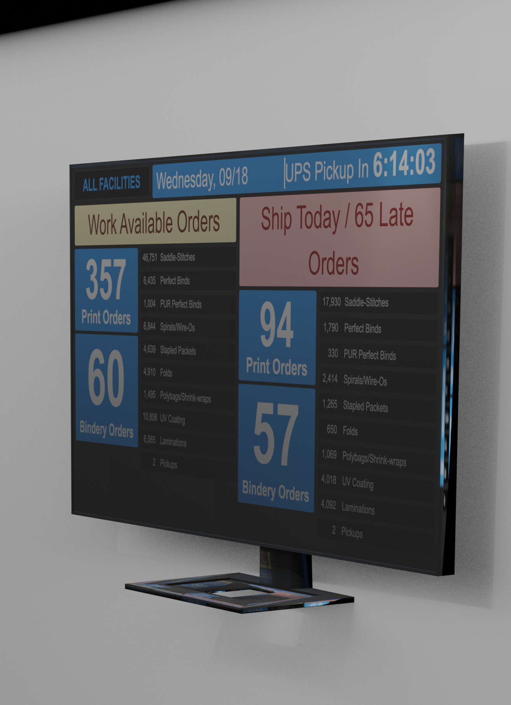
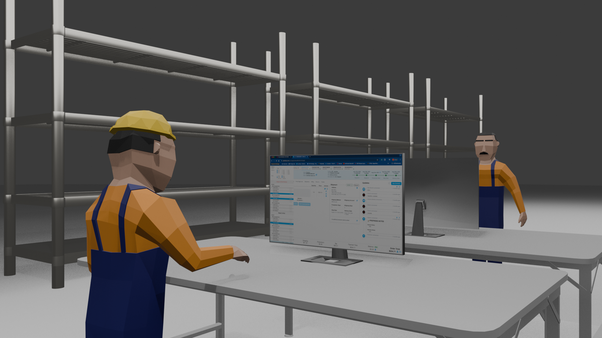
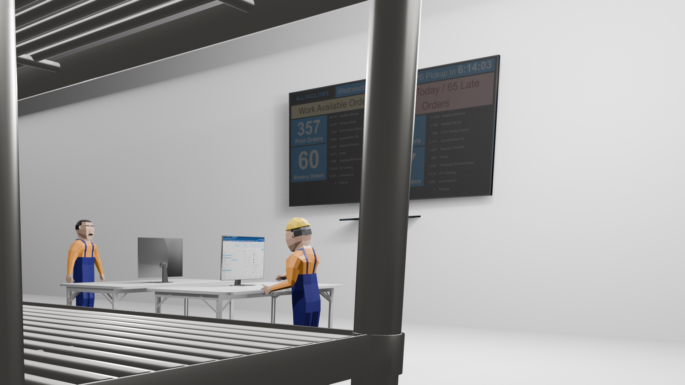

Prototype scene

- My goal was to build a warehouse that represents the warehouse where my product will live.
- Additionally, the product is built for print operators, so I wanted to show users actually engaging with the tool.

- I used some pre-made models to speed up the process.
- Some of the models required some adjustments. The warehouse racks, for example, were grouped together.

- Struggled to get lighting right. Initially my renders were completely black, so I assumed it was because there was no lighting applied.
- Adding lighting still didn't show the screen content for some reason. So I increased the light wattage and added more, and that seemed to help.

- After adding more light, it seemed to be better. I still wanted to improve the visual effect of the screen, so in a later iteration, I'd like to implement this tutorial

